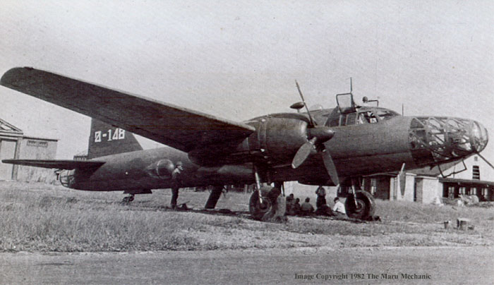
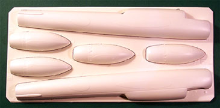
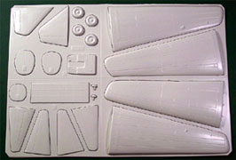
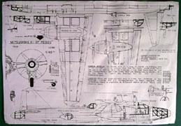
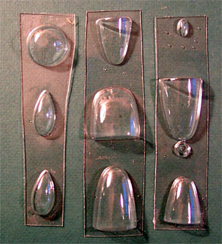
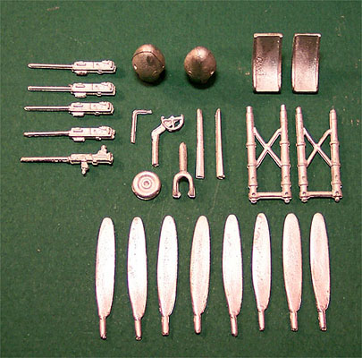
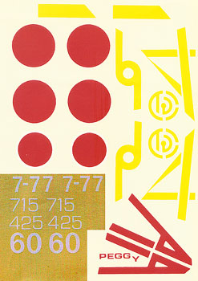

{kind=link}
{kind=link}
{kind=link}
{kind=link}


Sanger 1/48 Scale Mitsubishi Ki-67 "Flying Dragon" codename �Peggy�

Kit #N/A MSRP �24.00 Sterling
Images and text Copyright � 2004 by Matt Swan
Developmental Background
First encountered during the furious air-sea battle fought off Formosa in 1944, the Allies identified it as a new Naval type. However, downed examples in China and captured planes in the Philippines revealed its true identity. This was the Mitsubishi Ki-67 Hiryu "Flying Dragon" that resembled the G4M Betty put on a slimming diet. Designed by Mitsubishi Chief Engineer Ozawa Kyonosuke and his team in response to a 1941 Japanese Army specification requesting a high-speed heavy bomber the Ki-67 not only met the speed requirement she did so while achieving the maneuverability of a fighter. In addition, it also sported armor and self-sealing fuel tanks and was perhaps one of the best all around bombers produced by Japanese during the Pacific War.
Late in 1940, even as Nakajima�s Ki-49 Donryu was undergoing testing, the Army Air Staff was drafting specifications for her future successor. Mitsubishi was therefore instructed to build three prototypes. Ozawa�s team designed a clean, slender mid-wing monoplane powered by a pair of 1,900-hp Ha-104s. To ease production, the Ki-67 was designed to be constructed from sub-assemblies right from the start. Without a bomb load of any kind, the Hiryu could easily loop, its turning radius often exceeded some fighter designs, and its controls remained smooth and effective even in dives of up to 373 mph. It compared favorably with Allied contemporaries, but despite its official classification by the JAAF as a heavy bomber, it was more in the class of the American B-26 Marauder.
The type was considered to be both easy to fly and amazingly maneuverable. This performance inspired the development of the type into a heavy fighter (the Ki-109), which in addition to more powerful turbocharged engines, would have a hand loaded 75mm cannon and 15 rounds of ammunition in a solid nose. Unfortunately (or fortunately if you were a B-29 crewman) the more powerful engines were not available and the Ki-109 was equipped with standard engines, which would not allow the aircraft to reach sufficient altitude to attack the Superfortresses.
The development of the Ki-67 �Peggy� was chaotic at best. The potential of the plane was so promising that the Army asked for too many versions and tests so that it took until October of 1944 for the plane to enter service. It served mainly in torpedo missions against the US armada heading towards Japan. It also conducted several raids against B-29 bases in the Mariannas. A remarkable heavy bomber: it was not only the best in its category in wartime Japan, but its maneuverability was such that it could outshine purebread fighters. When the war ended and production ceased 727 examples of the �Peggy� had been manufactured.
The Kit
While this kit is available under the Sanger nametag it is actually a old Contrail kit, Sanger simply purchased the molds and reissued the kit. There are no packaging frills wasted on this, the kit arrived in a plastic bag wrapped several times with brown paper. The contents of the bag are very basic with there being two sheets of very stout white polystyrene, three small sheets of heavy yet surprisingly clear canopy parts and a single bag of white metal pieces.



You may click on the above images to view larger pictures

Let us start with these two large sheets of plastic, the material is inconsistent in that one sheet is a nice, smooth white plastic of 1mm thickness while the other is slightly sandy in color, the same thickness but has a kind of odd feel to it like Styrofoam. The sandy colored sheet contains the main fuselage parts and engine nacelles. These pieces are nearly devoid of any panel lines which may not be a bad thing as I will not have to fill anything before I start scribing (boy am I looking forward to that). Areas to be cut out for the cockpit, fuselage gun positions, dorsal gun turret and tail cone are well marked. There are no cut markings on the engine nacelles so some careful research will be needed before these pieces are worked on. Who am I kidding? Careful research will be required on the entire kit before any work commences.
Moving right along we have the large white sheet of parts. These pieces look quite different from the fuselage pieces in that there are quite a few main panel lines in place. These lines are somewhat wide but do appear to be consistent and do not fade out halfway down the part. This sheet covers the wings, the tail surfaces and a few interior pieces such as the main cabin floor, a few bulkheads and the main wheels. I found a few really nasty casting boogers on the wings but nothing that I can�t deal with.
Okay, let�s talk about these clear parts. Like I said before we have three small sheets of clear parts covering the nose cone in two pieces with the seam right down the center, the tail cone in two pieces and again with the seam right down the center. The main cabin canopy, the navigation blister, two side windows and the top gun turret are here also. The plastic is the same 1mm thickness as the other pieces and has great clarity, now for the bad news � there are no frame lines at all, not one � nothing. It is entirely up to the modeler to research the framing, which is quite complex, and then transpose this information onto a compound curved surface.
I�ll come back to this framing and panel line subject during the review of the instructions, now I want to look into the little bag of white metal pieces that come with the kit. Taped inside a fuselage half is a small bag containing the white metal parts. Here we have the main landing gear legs, individual propeller blades and hubs, five machine guns and two seats as well as a few other minor detail pieces.

The quality of these pieces is mediocre at best; there is a well-defined mold separation line on every piece that needs to be shaved off. The landing gear legs are of slightly different lengths as are the propeller blades. I think the two seats are supposed to be the same but one is quite a bit larger than the other and both display some serious pitting in the metal. While most of this stuff appears salvageable it all will need some serious work invested in it.
Considering the size of the model and the amount of viewable area inside the fuselage these pieces will do little to fill the void, there is going to be a lot of scratch work going on here. So this is what we have so far, two sheets of white vacuformed parts (27 pieces) and three sheets of clear vacuformed parts (10 pieces) and a small bag of white metal pieces (25 pieces) for a total of 62 pieces in the package.
Decals and Instructions
The instructions for this kit come as two very large seventeen inch by twelve inch sheets printed on one side only. Above with the pictures of the vacuformed parts is a picture of one of these sheets. This is where I want to come back to the discussion of panel lines and clear parts framing. The first page of the instructions show many of the panel lines that should be on the aircraft and are in scale so it can be used as a guide for scribing. They also suggest that you use a fine black tape to create the frames. Products that come to mind that might be used for this are Pactra pin-stripping tape which I have used successfully before or even painted Bare Metal Foil.
The instructions suggest that the clear pieces are stable as far as size goes and that you should assembly these pieces first and use them as a guide for sanding the main fuselage pieces so as to not sand too much off and create a narrower fit than needed. They also instruct you to fix the wings to the fuselage with a secure bond but don�t offer any real suggestions as to how to achieve that. Some form of wing spar will have to be created. Proper wing dihedral measurements are given. The second page deals with placing the wings and tail surfaces and also covers painting and marking schemes for several different aircraft. While the instructions do impart a fair amount of information careful study of them and additional reference material will be required.

The decals provided with the package come in a single large sheet with a continuous carrier film. For those of you who do not know what this means, each decal must be cut very close to the printed image, it�s not like a screen printed decal where you can cut a large area out and have just a decal with a small outline of carrier film.
In the image to the right I altered the contrast over the white numerals to aid viewing, you can also click on that image to view a larger picture of the decals sheet. Basic markings are given for seven different aircraft. There are no service stencils or any small markings provided. The colors look to be a little light on the red hinomarus and tail markings. The decal material appears to be fairly thin. I cannot make an assessment yet on their behavior with setting solutions, as I have never worked with Sanger decals before. A couple of the aircraft specified in the instructions feature white backings on the hinomarus and these are not provided, the modeler will have to mask and paint these or find substitutes in a spares box.
Conclusions
There are a few models made of this aircraft in 1/72 scale but none available in 1/48 other than this one. I would suggest picking up a Arii, Hasegawa or L&S 1/72 kit just for some additional reference material for the construction of this kit. I have heard that original Sanger kits are pretty nice but as I pointed out earlier this is really a Contrail kit under the Sanger name. The parts are basic; there is no other way to describe them. All panel lines will have to be scribed on the fuselage and many will have to be done on the flying surfaces. The interior is bare other than a very few items. There is nothing on the aftermarket aimed at this kit but there are a few things that may be converted such as the True Details wheels for the �Betty�. Eduard made a 1/72 scale four sheet PE set for the Hasegawa kit and I have convinced them to upsize a copy for this build but it�s an expensive proposition ($80.00). There has been some discussion of having Lone Star Models make a resin detail set also but that is even more of my hard earned cash. At a bare minimum I would recommend having a copy of the Maru Mechanic book that covers this aircraft.
This kit is for advanced masochistic modelers only. A lot of work will be required, extensive research should be done and you should be young when you start this because it could take years to complete.